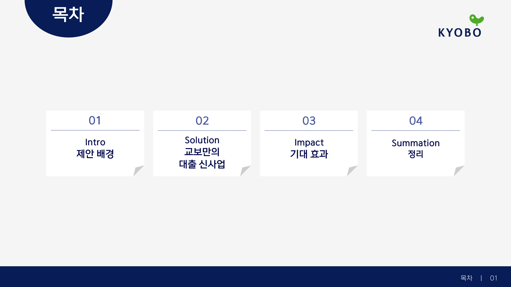
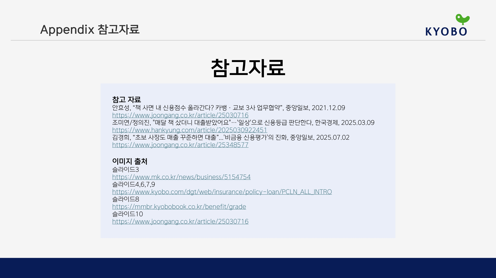

00
한 장씩 넘기는 발표가 아니라,
Overview
한 장씩 넘기는 발표가 아니라,
하나의 이야기처럼 내려갑니다.

01
Intro
제안 배경
교보의 정체성과 더 넓은 고객층을 확보할 수 있는 금융상품이라는 두 질문에서 출발합니다.
02
Solution
교보만의 대출 신사업
기존 교보생명 신용대출의 고객 범위를 교보문고 회원과 구매 이력 보유 고객까지 확장하는 구조입니다.
03
Impact
기대 효과
고객 유입, 교보문고 락인, 교보생명 신규 고객 확대, 비금융 데이터 활용이라는 네 방향의 효과를 제시합니다.
04
Summation
정리
교보문고의 브랜드와 고객 데이터를 교보생명의 금융 역량과 연결해 새로운 접점을 만드는 제안입니다.
Thank you
참고자료 보기 +
